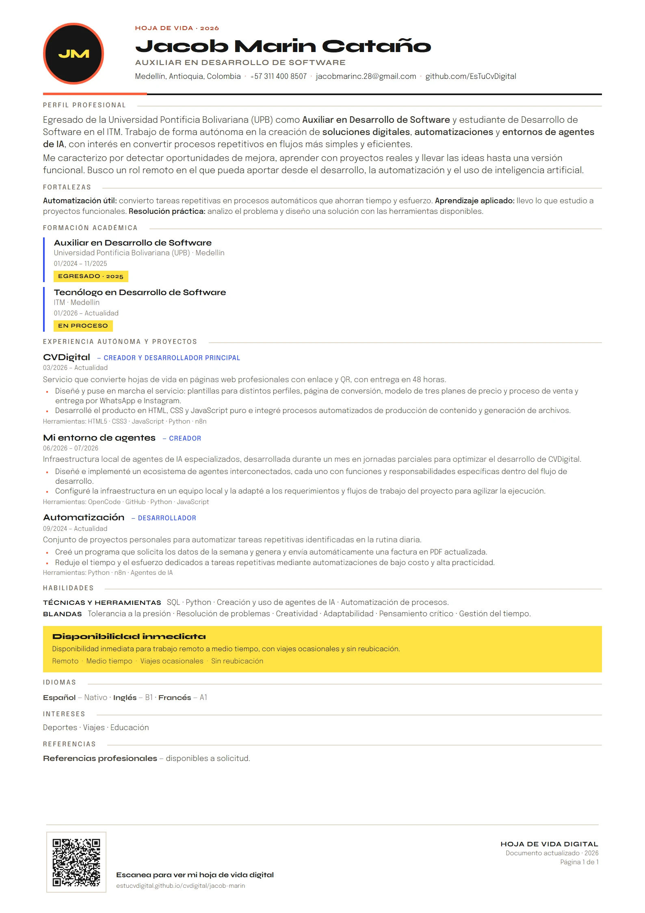

Automatización útil
Detecto tareas repetitivas y las convierto en procesos automáticos que ahorran tiempo y esfuerzo.
Auxiliar en Desarrollo de Software, egresado de la UPB y estudiante en el ITM. Creo páginas web, automatizaciones y entornos de agentes de IA.
Egresado de la Universidad Pontificia Bolivariana (UPB) como Auxiliar en Desarrollo de Software y estudiante de Desarrollo de Software en el ITM. Trabajo de forma autónoma en la creación de soluciones digitales, automatizaciones y entornos de agentes de IA, con interés en convertir procesos repetitivos en flujos más simples y eficientes.
Me caracterizo por detectar oportunidades de mejora, aprender con proyectos reales y llevar las ideas hasta una versión funcional. Busco un rol remoto en el que pueda aportar desde el desarrollo, la automatización y el uso de inteligencia artificial.
Detecto tareas repetitivas y las convierto en procesos automáticos que ahorran tiempo y esfuerzo.
Llevo lo que estudio a proyectos funcionales: páginas web, automatizaciones y entornos de agentes de IA.
Analizo el problema, identifico lo que se repite y diseño una solución con las herramientas disponibles.
Universidad Pontificia Bolivariana (UPB) · Medellín
01/2024 – 11/2025
Egresado · 2025ITM · Medellín
01/2026 – Actualidad
En procesoServicio que convierte hojas de vida en páginas web profesionales con enlace y QR, con entrega en 48 horas.
Infraestructura local de agentes de IA especializados, desarrollada durante un mes en jornadas parciales para optimizar el desarrollo de CVDigital.
Conjunto de proyectos personales para automatizar tareas repetitivas identificadas en la rutina diaria.
Disponibilidad inmediata para trabajo remoto a medio tiempo, con viajes ocasionales y sin reubicación.

Esta versión web y el PDF comparten el mismo contenido, sin datos adicionales. El PDF está maquetado en A4 y en una sola página para facilitar la lectura y la carga en portales de empleo. Incluye un código QR que lleva a la versión web, siempre actualizada.